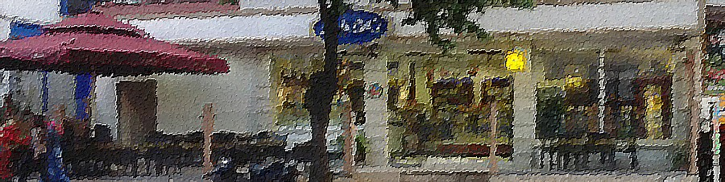

Çeşitlerimiz
Yerimiz
Mado!
.

Kavacık çarşısında, sakin, huzurlu ortam
Taze tatlı, tuzlu, nefis kahve ve içecek çeşitleri
tel: 0216 425 2830
Kavacık Mh., Fatih Sultan Mehmet Cd. (Çavuşbaşı Cd.) No:4
İstanbul
ana sayfa
çeşitler
yerimiz
MADO